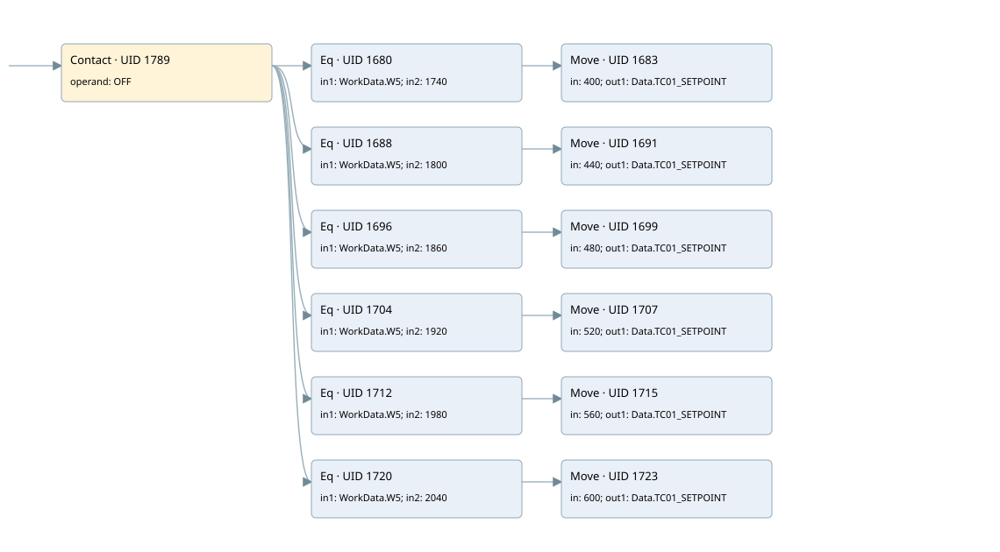

dryout warm third ramp
burner control · 검색 색인 순서 24 · 원본 내부 NID 추정 23
백업 PLF 원본의 2709469 바이트 위치에서 복원한 XML. 검색 문서 1877의 객체 키 16102200f910000000000000와 연결했다. 이름 해석 25/25개. 남은 RefId는 상수 또는 미해석 참조다.
연결 구조 다시 그리기
원본 Part/PCon/Wire를 이용한 연결도다. TIA 화면의 래더 배치 또는 실행 결과를 재현한 그림은 아니다. 핀 연결은 아래 표와 원본 XML을 기준으로 읽는다. 노드 위에 마우스를 두면 피연산자 이름을 볼 수 있다.

접점·코일·블록과 피연산자
| Part UID | Gate | Negated 핀 | 연결 피연산자 |
|---|---|---|---|
| 1789 | Contact | operand = OFF | |
| 1680 | Eq | in1 = WorkData.W5; in2 = 1740 | |
| 1683 | Move | in = 400; out1 = Data.TC01_SETPOINT | |
| 1688 | Eq | in1 = WorkData.W5; in2 = 1800 | |
| 1691 | Move | in = 440; out1 = Data.TC01_SETPOINT | |
| 1696 | Eq | in1 = WorkData.W5; in2 = 1860 | |
| 1699 | Move | in = 480; out1 = Data.TC01_SETPOINT | |
| 1704 | Eq | in1 = WorkData.W5; in2 = 1920 | |
| 1707 | Move | in = 520; out1 = Data.TC01_SETPOINT | |
| 1712 | Eq | in1 = WorkData.W5; in2 = 1980 | |
| 1715 | Move | in = 560; out1 = Data.TC01_SETPOINT | |
| 1720 | Eq | in1 = WorkData.W5; in2 = 2040 | |
| 1723 | Move | in = 600; out1 = Data.TC01_SETPOINT |
접점 경로를 펼친 조건식
Contact·O/A·비교기의 원본 연결을 읽기 쉽게 펼친 보조 해석이다. POWER는 전원 레일 시작을 뜻한다. 호출 블록·에지·타이머의 내부 동작과 다중 쓰기 순서는 이 표로 실행 검증하지 않았다. 미해석 핀과 RefId는 원문 연결표에서 확인한다.
| UID | 동작 | 대상 | 원본 접점 경로 | 내용 |
|---|---|---|---|---|
| 1683 | Move | Data.TC01_SETPOINT | (OFF AND [WorkData.W5 = 1740]) | Move 입력 400 |
| 1691 | Move | Data.TC01_SETPOINT | (OFF AND [WorkData.W5 = 1800]) | Move 입력 440 |
| 1699 | Move | Data.TC01_SETPOINT | (OFF AND [WorkData.W5 = 1860]) | Move 입력 480 |
| 1707 | Move | Data.TC01_SETPOINT | (OFF AND [WorkData.W5 = 1920]) | Move 입력 520 |
| 1715 | Move | Data.TC01_SETPOINT | (OFF AND [WorkData.W5 = 1980]) | Move 입력 560 |
| 1723 | Move | Data.TC01_SETPOINT | (OFF AND [WorkData.W5 = 2040]) | Move 입력 600 |
원본 배선 연결
| Wire UID | 동일 Wire 연결 끝점 |
|---|---|
| 1791 | Powerrail {} ↔ Part 1789.in |
| 1751 | ORef 1726 (OFF) ↔ Part 1789.operand |
| 1790 | Part 1789.out ↔ Part 1680.pre ↔ Part 1688.pre ↔ Part 1696.pre ↔ Part 1704.pre ↔ Part 1712.pre ↔ Part 1720.pre |
| 1752 | ORef 1727 (WorkData.W5) ↔ Part 1680.in1 |
| 1753 | ORef 1728 (1740) ↔ Part 1680.in2 |
| 1754 | Part 1680.out ↔ Part 1683.en |
| 1756 | ORef 1729 (400) ↔ Part 1683.in |
| 1757 | Part 1683.out1 ↔ ORef 1730 (Data.TC01_SETPOINT) |
| 1758 | ORef 1731 (WorkData.W5) ↔ Part 1688.in1 |
| 1759 | ORef 1732 (1800) ↔ Part 1688.in2 |
| 1760 | Part 1688.out ↔ Part 1691.en |
| 1762 | ORef 1733 (440) ↔ Part 1691.in |
| 1763 | Part 1691.out1 ↔ ORef 1734 (Data.TC01_SETPOINT) |
| 1764 | ORef 1735 (WorkData.W5) ↔ Part 1696.in1 |
| 1765 | ORef 1736 (1860) ↔ Part 1696.in2 |
| 1766 | Part 1696.out ↔ Part 1699.en |
| 1768 | ORef 1737 (480) ↔ Part 1699.in |
| 1769 | Part 1699.out1 ↔ ORef 1738 (Data.TC01_SETPOINT) |
| 1770 | ORef 1739 (WorkData.W5) ↔ Part 1704.in1 |
| 1771 | ORef 1740 (1920) ↔ Part 1704.in2 |
| 1772 | Part 1704.out ↔ Part 1707.en |
| 1774 | ORef 1741 (520) ↔ Part 1707.in |
| 1775 | Part 1707.out1 ↔ ORef 1742 (Data.TC01_SETPOINT) |
| 1776 | ORef 1743 (WorkData.W5) ↔ Part 1712.in1 |
| 1777 | ORef 1744 (1980) ↔ Part 1712.in2 |
| 1778 | Part 1712.out ↔ Part 1715.en |
| 1780 | ORef 1745 (560) ↔ Part 1715.in |
| 1781 | Part 1715.out1 ↔ ORef 1746 (Data.TC01_SETPOINT) |
| 1782 | ORef 1747 (WorkData.W5) ↔ Part 1720.in1 |
| 1783 | ORef 1748 (2040) ↔ Part 1720.in2 |
| 1784 | Part 1720.out ↔ Part 1723.en |
| 1786 | ORef 1749 (600) ↔ Part 1723.in |
| 1787 | Part 1723.out1 ↔ ORef 1750 (Data.TC01_SETPOINT) |
식별자 해석 근거 25개
| ORef UID | RefId | 이름 | IdentXmlPart 파일 | 해석 방법 |
|---|---|---|---|---|
| 1726 | 80 | OFF | 0582-IdentXmlPart.xml | UID/RID + search-text + NID agreement |
| 1727 | 48 | WorkData.W5 | 0585-IdentXmlPart.xml | UID/RID + search-text + NID agreement |
| 1728 | 198 | 1740 | 0586-IdentXmlPart.xml | literal candidate: UID/RID/NID + nearby named declarations + search-text agreement |
| 1729 | 200 | 400 | 0586-IdentXmlPart.xml | literal candidate: UID/RID/NID + nearby named declarations + search-text agreement |
| 1730 | 59 | Data.TC01_SETPOINT | 0585-IdentXmlPart.xml | UID/RID + search-text + NID agreement |
| 1731 | 48 | WorkData.W5 | 0585-IdentXmlPart.xml | UID/RID + search-text + NID agreement |
| 1732 | 201 | 1800 | 0586-IdentXmlPart.xml | literal candidate: UID/RID/NID + nearby named declarations + search-text agreement |
| 1733 | 203 | 440 | 0586-IdentXmlPart.xml | literal candidate: UID/RID/NID + nearby named declarations + search-text agreement |
| 1734 | 59 | Data.TC01_SETPOINT | 0585-IdentXmlPart.xml | UID/RID + search-text + NID agreement |
| 1735 | 48 | WorkData.W5 | 0585-IdentXmlPart.xml | UID/RID + search-text + NID agreement |
| 1736 | 204 | 1860 | 0586-IdentXmlPart.xml | literal candidate: UID/RID/NID + nearby named declarations + search-text agreement |
| 1737 | 183 | 480 | 0586-IdentXmlPart.xml | literal candidate: UID/RID/NID + nearby named declarations + search-text agreement |
| 1738 | 59 | Data.TC01_SETPOINT | 0585-IdentXmlPart.xml | UID/RID + search-text + NID agreement |
| 1739 | 48 | WorkData.W5 | 0585-IdentXmlPart.xml | UID/RID + search-text + NID agreement |
| 1740 | 206 | 1920 | 0586-IdentXmlPart.xml | literal candidate: UID/RID/NID + nearby named declarations + search-text agreement |
| 1741 | 208 | 520 | 0586-IdentXmlPart.xml | literal candidate: UID/RID/NID + nearby named declarations + search-text agreement |
| 1742 | 59 | Data.TC01_SETPOINT | 0585-IdentXmlPart.xml | UID/RID + search-text + NID agreement |
| 1743 | 48 | WorkData.W5 | 0585-IdentXmlPart.xml | UID/RID + search-text + NID agreement |
| 1744 | 209 | 1980 | 0586-IdentXmlPart.xml | literal candidate: UID/RID/NID + nearby named declarations + search-text agreement |
| 1745 | 211 | 560 | 0586-IdentXmlPart.xml | literal candidate: UID/RID/NID + nearby named declarations + search-text agreement |
| 1746 | 59 | Data.TC01_SETPOINT | 0585-IdentXmlPart.xml | UID/RID + search-text + NID agreement |
| 1747 | 48 | WorkData.W5 | 0585-IdentXmlPart.xml | UID/RID + search-text + NID agreement |
| 1748 | 212 | 2040 | 0586-IdentXmlPart.xml | literal candidate: UID/RID/NID + nearby named declarations + search-text agreement |
| 1749 | 188 | 600 | 0586-IdentXmlPart.xml | literal candidate: UID/RID/NID + nearby named declarations + search-text agreement |
| 1750 | 59 | Data.TC01_SETPOINT | 0585-IdentXmlPart.xml | UID/RID + search-text + NID agreement |
검색 코드 보조 자료
참조 명칭을 찾기 위한 자료이며 실행 순서나 AND/OR 관계는 위 연결표로 확인한다.
"off" "workdata".w5 1740 move 400 "workdata".w5 1800 move 440 "data".tc01_setpoint "workdata".w5 1860 move 480 "data".tc01_setpoint "workdata".w5 1920 move 520 "data".tc01_setpoint "workdata".w5 1980 move 560 "data".tc01_setpoint "workdata".w5 2040 move 600 "data".tc01_setpoint "data".tc01_setpoint